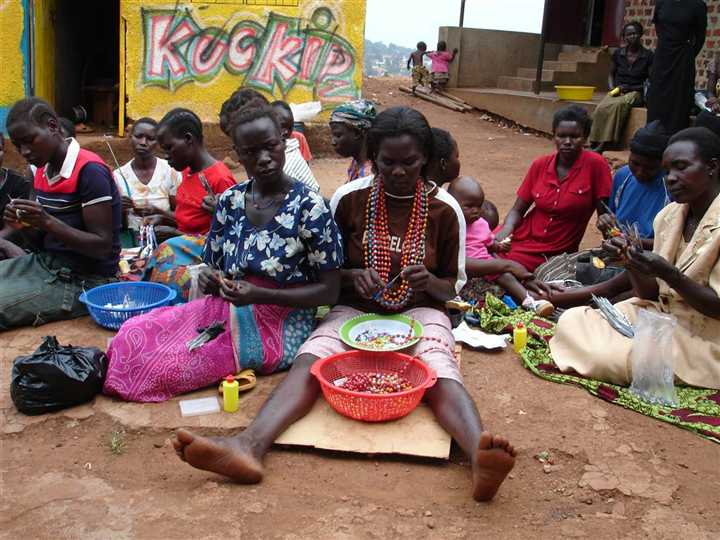
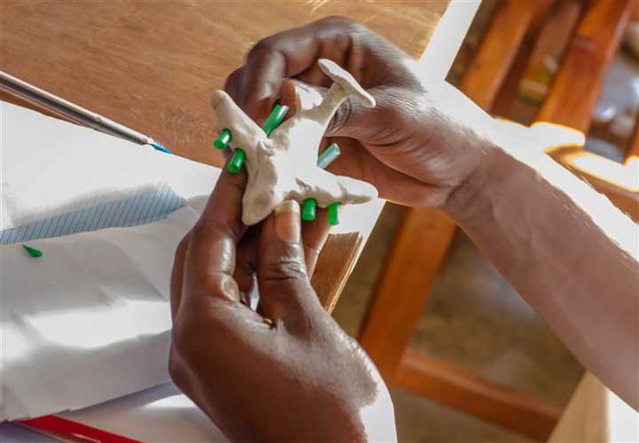
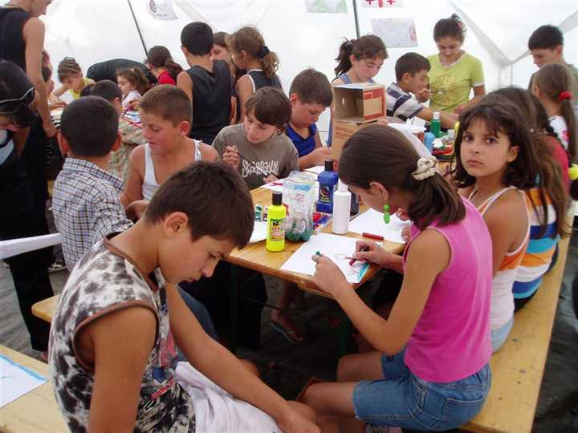
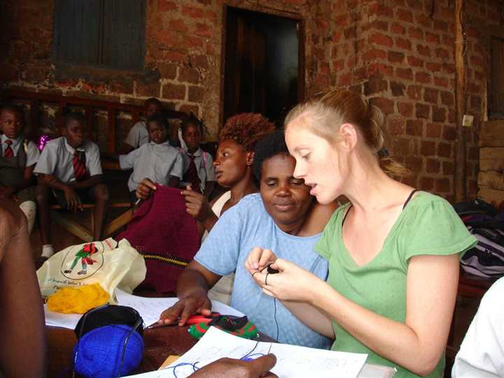
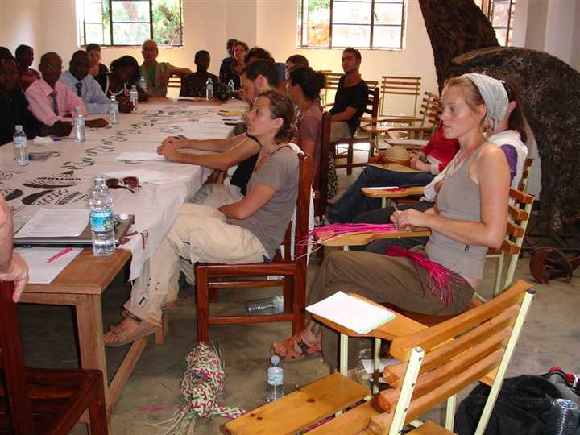

Active membership
SoArt moves from the language of a target audience to the language of members, partners, and co-creators.
Who we are
SoArt grows from real field experience with communities, children, women, young people, practitioners, and organizations using creativity to rebuild voice, belonging, dignity, resilience, and shared meaning.



What we believe
We believe that many of the deepest challenges of our time are not only economic or institutional. They are also crises of meaning, trust, identity, participation, memory, and belonging.
Art creates enabling spaces where people can process experience, express what cannot always be said in words, build confidence, meet others, and transform personal stories into collective imagination and action.


What we want to build
SoArt is being created as a global platform and movement for people and organizations who use art for healing, education, community development, dialogue, activism, research, and social innovation. It is built with its members, not only for them.
The movement is designed to help the field move from isolated projects to a connected ecosystem: a living network where local practice becomes visible, experiential knowledge becomes cumulative, and diverse members can initiate, learn, collaborate, and lead.
SoArt moves from the language of a target audience to the language of members, partners, and co-creators.
Each initiative remains rooted in its cultural and community context while contributing to a wider global field.
Experience from the field should not disappear. It should become documented learning, transferable practice, and public value.
Roots and partners
SoArt Movement is inspired by the accumulated field experience of Topaz International and Brit Olam in social entrepreneurship, international volunteering, education, community development, and creative work with diverse communities. As SoArt develops its own identity and future logo, we honor these roots as part of the story from which the movement grows.
With roots in the work of Topaz International and Brit Olam.
Invitation
We are inviting artists, educators, therapists, social entrepreneurs, activists, researchers, community leaders, NGOs, public institutions, academic partners, cultural organizations, funders, and communities to help shape SoArt as a shared global movement.
Register interest